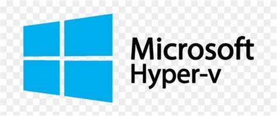
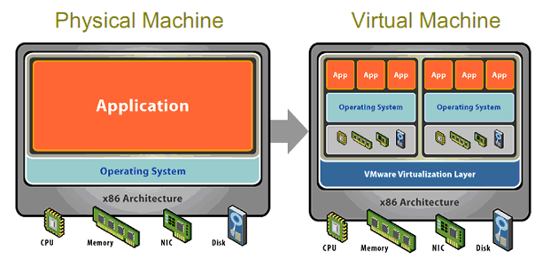

EMULÁTOR
Emulátor je program, který umožňuje běh počítačových programů na jiné platformě (architektuře, operačním systému), než pro kterou byly původně vytvořeny a kterou samy od sebe podporují. Typickým příkladem emulátoru je program umožňující běh videoher známých z herních konzol na běžném PC pod MS Windows nebo Linuxem. Jiným příkladem může být emulátor DOSBox, který emuluje starý operační systém MS DOS v prostředí novějších Windows, případně i na zcela odlišných platformách (Linux).- Emulátory
-
PCjs_Emulator
- zde můžete vyzkoušet některé starší systémy přímo v prohlížeči
Andorid_Emulator
VIRTUALIZACE
označuje v informatice postupy a techniky, které umožňují v počítači přistupovat k dostupným zdrojům jiným způsobem, než jakým fyzicky existují.Virtualizaci je možné realizovat na různých úrovních - od celého počítače (tzv. virtuální stroj), po jeho jednotlivé hardwarové komponenty (např. virtuální procesory, virtuální paměť), až po konkrétní softwarové prostředí (virtualizace operačního systému).
|
|
|

|
VIRTUÁLNÍ STROJ
je speciální software, který dokáže simulovat skutečný počítač (včetně jeho procesoru, paměti, disku, přídavných karet) a umožňuje instalaci OS i dalších programů. Podmínkou virtualizace je výkonný počítač a potřebný software např. Virtual PC(Microsoft), VirtualBox (Oracle), VMWare apod.| 
|
×

- Virtuální stroje : se používají z bezpečnostních důvodů pro běh některých aplikací, aby tyto nemohly ohrozit hostitelský počítač a jeho operační systém. Často jsou využívány i pro testování nových aplikací. Velmi přínosná je virtualizace na úrovni serverů - tzv. konsolidace serverů nabízí dokonalejší využití hardware, oddělený běh síťových aplikací i vyšší bezpečnost dat.